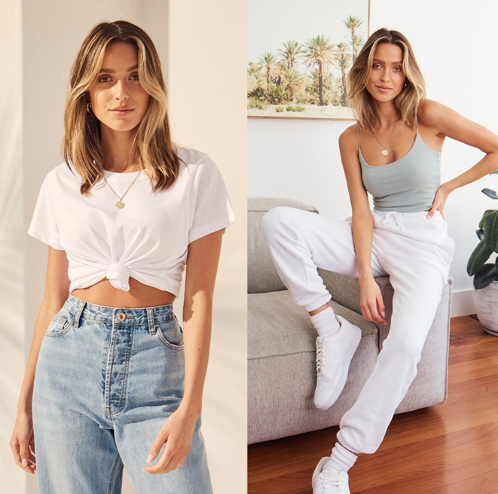
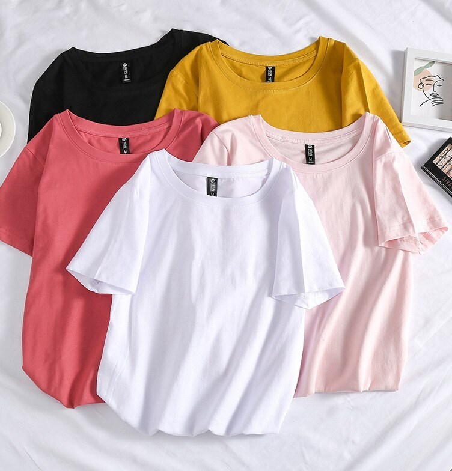

Fashion basics have the magic power of making your everyday life easier. Maybe you know it already, maybe you don’t yet think that basic clothing is the way to go? How I came to get to know this power and what it is that make sustainable basics so powerful, I will tell you today. As I grew up, I’ve been largely manipulated by modern media, like most youngsters and even most adults are. It took a lot of time and effort, two degrees and some intense work on my own habits to break this irritating need to always have a wardrobe full of things I didn't actually need. The habit of always wanting to have something new is clearly socially trained and if we are honest, it has nothing to do with our basic needs as humans. Furthermore, those trendy pieces are seldom made from organic fabrics, let alone made under fair working conditions.
I need to ask you: I know, it is cliché, but when was the last time you stood in front of your full closet and despite of all those beautiful pieces you just couldn’t decide on what to wear? The media tells you this is the sign you need something new. This is simply not true.
Saves Time
First of all, your thoughts should be free for more important stuff, like planning your day or writing into a journal. Or something else you might consider important. Secondly, the right way to make faster decisions is to reduce your options. Not to broaden your possibilities. This is what basics are great for. Not only do basics free your mind from unimportant stuff like wasting time on thought about today’s outfit in the morning, they give you time to enjoy life, pursue your passions and get something done. I would always exchange wasteful minutes of outfit-brainstorming with cuddling for some more minutes or replying to my first emails.
Saves Money
Besides saving time, going for basics also saves money. You simply don’t buy into trends that noone wants to see anymore after a short while. This brings you the benefit of having the money to wear the good stuff. I’m talking Filippa K. and friends. Who doesn’t want that? With high quality basic clothes you do not only facilitate your everyday life, you have more of your clothes. Especially high quality sustainable basics have a much longer life-cycle, which is not only great for the environment, but for you too.
I truly believe that fundamental pieces that previously hid at the bottom of closets, like white button-downs and blazers, are no longer afterthoughts dug up occasionally to anchor a bold outfit. As we refocus our wardrobes to meet the current times, basic pieces that both maximize comfort and keep us looking (and feeling!) polished for the day reign supreme.